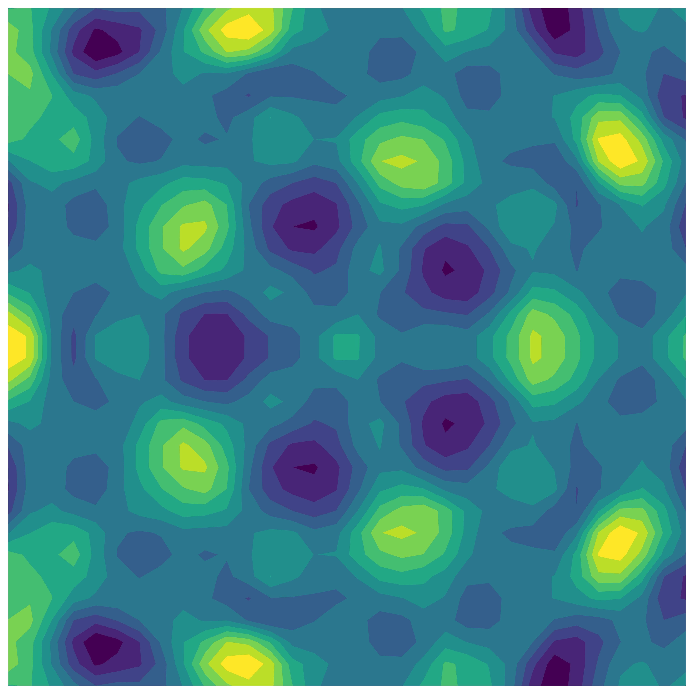

Sample-efficient Bayesian optimisation
using known invariances
Neural Information Processing Systems, 2024
Bayesian optimisation
Wide range of applications

Goal: sample efficiency
Symmetry and invariance
How can we exploit symmetry in BO?
- Objective function is known to be symmetric
- Key insight: making one observation gives additional information
- In the noiseless case, this is perfect information
Invariant Gaussian processes
Naive method: data augmentation
- Key insight: making one observation gives additional information
- Data augmentation: add transformed data to dataset \[ \mathcal{D} \gets \mathcal{D} \cup \{(\sigma(x), f(x)) \quad \forall \sigma \in G, x \in \mathcal{D}\} \]
- Problem: computational cost of GP scales with \(\mathcal{O}(\textcolor{#9a2515}{|G|^3} n^3)\)
Can we do better?
Invariant Gaussian processes
Our method: invariant kernel
- Construct an invariant kernel: \[ k_G(x, x') = \frac{1}{|G|} \sum_{\sigma \in G} k(x, \sigma(x')) \]
- GPs with this kernel are distributions over invariant functions!

Compute cost reduced from \(\mathcal{O}(\textcolor{#9a2515}{|G|^3} n^3)\) to \(\mathcal{O}(\textcolor{#259a15}{|G|} n^3)\)
Sample complexity for invariant kernel BO
Number of samples \(T\) for precision \(\epsilon\)
- Our upper bound:
\[\begin{align} T = \tilde{\mathcal{O}}\left( \left( {\textcolor{#259a15}{\frac{1}{|G|}}} \right)^\frac{2\nu + d -1}{2 \nu} \epsilon^{-\frac{2\nu + d -1}{\nu}} \right) \end{align}\]
- Large \(|G|\) → large reduction in number of samples
- Lower bound in our paper
Synthetic experiments
Invariant GP-MVR
- Invariant beats standard
- Invariant beats constrained
- Use subgroups for low-cost approximation (2- and 3- block invariance)
Application: fusion reactor design
High-temperature plasma → zero-carbon, low-waste energy
- Task: find an operating point with high stability
- Actuators are permutation invariant
- Using an invariant kernel achieves better results!
Sample-efficient Bayesian optimisation
using known invariances
ü™ß Check out our poster
üìù Read the paper on arXiv
üåê See our blog for more info
✉️ Reach out to theo.brown@ukaea.uk